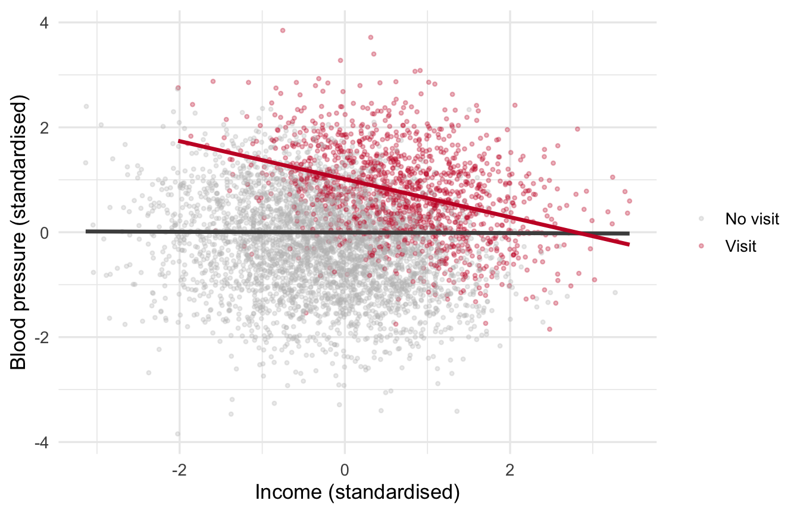
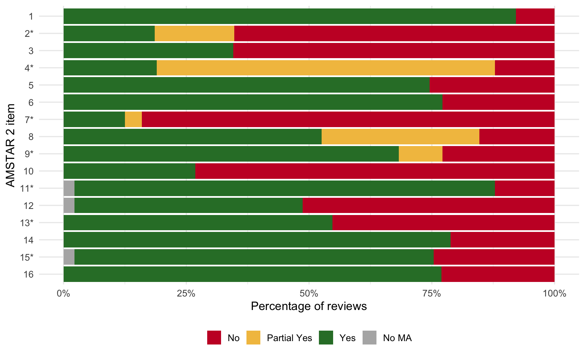

describe the structure of PRISMA 2020 and the items that published reviews most often fail;
explain what is different about reviews of observational studies, including the two meanings of “selection bias”, and recognise collider bias in a causal diagram;
choose between the Newcastle-Ottawa Scale, ROBINS-I and ROBINS-E for appraising non-randomised studies;
apply AMSTAR 2 to a completed review, compute its overall confidence rating, and read the item profile behind the rating;
apply ROBIS to judge whether a review’s conclusions are at risk of bias, and explain how its question differs from AMSTAR 2’s;
recognise spin in the abstract and conclusions of a review, and rewrite a conclusion to match the certainty of the evidence;
combine these tools in a structured sequence for appraising a published review.
R packages:dplyr, tidyr, ggplot2, knitr.
Data:data/ch07/amstar2vis_reviews.csv, AMSTAR 2 ratings of 495 systematic reviews distributed with the amstar2Vis package (1).
Chapter 5 and Chapter 6 were about the evidence: the risk of bias in each study, and the certainty of the body of evidence for each outcome. This chapter is about the review itself. Most readers meet the evidence through someone else’s systematic review, and a review can fail at several levels independently of the studies it contains. Four questions organise the chapter:
Is it completely reported? Without a full report, nothing else can be judged (PRISMA 2020).
Was it conducted with the safeguards of a rigorous review? (AMSTAR 2)
Are its conclusions at risk of bias, and do they answer my question? (ROBIS)
Do its conclusions say more than its evidence supports? (spin)
Reviews of observational studies need extra care at every step, and we deal with them before the appraisal tools.
7.1 Is the review completely reported? PRISMA 2020
7.1.1 Why reporting standards exist
A review that does not report what was done cannot be appraised, reproduced or updated. Reporting guidelines list the minimum information a report should contain; the EQUATOR Network maintains hundreds of them. For systematic reviews the core guideline is PRISMA 2020 (2), with extensions for particular kinds of review:
Table 7.1: Reporting guidelines for evidence syntheses.
Review type
Guideline
Any systematic review, with or without meta-analysis
PRISMA asks whether something is reported, not whether it was done well. A perfectly reported review of biased trials is still a review of biased trials. Methodological quality is appraised with AMSTAR 2 and ROBIS, later in this chapter.
7.1.2 Structure of PRISMA 2020
PRISMA 2020 has 27 items, several with sub-items, in seven sections (Table 7.2) (2,3).
Table 7.2: Sections and items of PRISMA 2020.
Section
Items
Content
Title
1
Identify the report as a systematic review
Abstract
2
Structured summary (PRISMA 2020 for Abstracts)
Introduction
3–4
Rationale; objectives
Methods
5–15
Eligibility criteria, information sources, search strategy, selection process, data collection, data items, risk of bias, effect measures, synthesis methods, reporting bias assessment, certainty assessment
Results
16–22
Study selection (flow diagram), study characteristics, risk of bias in studies, results of individual studies, results of syntheses, reporting biases, certainty of evidence
Discussion
23
Interpretation, limitations of the evidence and of the review, implications
Other information
24–27
Registration and protocol, support, competing interests, availability of data, code and other materials
Compared with PRISMA 2009, the 2020 statement requires the full search strategy for every database, a description of any automation tools used in screening, reporting of certainty assessments, and the availability of data and analytic code (item 27). The flow diagram (Section 2.5.3) separates records identified from databases and registers from those identified by other methods, such as citation searching.
7.1.3 Items that reviews often fail
Adherence to PRISMA is incomplete even in journals that endorse it (4). In appraising a review, check particularly:
Registration and protocol (item 24): was a protocol registered before the search, and are deviations from it explained?
Search strategy (item 7): is the full strategy given for every database, or only paraphrased?
Selection and data collection (items 8–9): were screening and extraction done in duplicate, and were automation tools described?
Risk of bias (items 11 and 18): is risk of bias assessed per outcome and used in the synthesis, or only displayed?
Synthesis methods (item 13): is the choice of model justified, and are heterogeneity and its exploration described?
Reporting biases (items 14 and 21): are funnel plots used with fewer than 10 studies?
Certainty (items 15 and 22): is certainty rated per outcome?
Interpretation (item 23): do the conclusions match the certainty of the evidence?
The last is the most consequential: conclusions that overstate low-certainty evidence are a form of spin (Section 7.5).
7.2 Reviews of observational studies
For long-term harms, rare outcomes and exposures that cannot be randomised, observational studies are often the only evidence. The question is not whether to use them but how to use them critically. Chapter 19 treats the synthesis of observational studies in detail; here we cover what an appraiser needs to know.
7.2.1 What is different
Every bias that threatens a review of trials (selective reporting, publication bias, sponsorship, Section 5.4) also threatens a review of observational studies. Observational studies add three structural problems:
Confounding. Without randomisation, exposed and unexposed people may differ in ways that also affect the outcome: confounding by indication, the healthy-user effect (people who take preventive treatments tend to be healthier in other ways) and protopathic bias (a drug prescribed for early symptoms of the outcome under study). Adjustment removes only the confounding that was measured and modelled correctly.
Selection. Who enters the study, or the analysis, can itself depend on exposure and outcome (Section 7.2.2).
Misclassification of exposure or time. Immortal time bias, the most common self-inflicted error in pharmacoepidemiology, is a combination of misclassification and selection; it was dissected with a simulation in Section 3.2.
Two further problems arise at the synthesis stage. Studies adjust for different sets of confounders, so a pooled “adjusted” estimate averages estimates of different quantities, and they may report odds ratios, risk ratios and hazard ratios over different time horizons (Chapter 8). And because the studies differ so much in populations, exposure definitions and outcome ascertainment, heterogeneity is usually large.
How different are observational and randomised estimates of the same effect? A Cochrane methodology review combined 14 methodological reviews and found no systematic difference on average: the ratio of odds ratios comparing trials with observational studies was 1.08 (95% CI 0.96 to 1.22) (5). That average conceals large disagreements on particular questions; hormone therapy and coronary disease (Section 8.4.3) is a famous example. The lesson for appraisal is that observational evidence is neither reliably biased in one direction nor reliably trustworthy: each study’s design has to be examined.
No pooling model repairs a biased input
In a review of observational studies, the design choices made in the primary studies (time zero, exposure definition, new-user versus prevalent-user cohorts, the adjustment set) constrain validity far more than the choice of meta-analytic model. Pooling biased studies produces a precise estimate of the wrong quantity.
7.2.2 Two meanings of selection bias
“Selection bias” is used for two different problems (6):
Failure to generalise (external validity). The sample is not representative of the target population. This does not by itself bias the comparison within the sample. If the effect differs across subgroups and their distribution in the target population is known, the estimate can be standardised to that population; otherwise its applicability is a limitation to state.
Bias within the sample (internal validity). Whether someone ends up in the analysed sample depends on, or shares causes with, both the exposure and the outcome. The comparison is then biased even among the people studied, and no reweighting to a target population fixes it.
The second kind has a single structure: conditioning on a common effect, or collider (7). A collider is a variable caused by two others; two arrows point into it. Conditioning on it, whether by restriction, stratification, matching, regression adjustment, or simply because a study can only enrol people with a certain value of it, creates an association between its causes even when they are independent.
A simulation makes the mechanism visible. Income and blood pressure are generated independently. Both raise the chance of a medical visit, and the study samples only people who had a visit.
Code
set.seed(123)n <-5000population <- tibble::tibble(income =rnorm(n), # standardised; independent of BPbp =rnorm(n)) |>mutate(visit =rbinom(n, 1, plogis(-2+2* income +2* bp))) # the collidersampled <-filter(population, visit ==1)rbind(population =coef(summary(lm(bp ~ income, data = population)))["income", c(1, 4)],visited =coef(summary(lm(bp ~ income, data = sampled)))["income", c(1, 4)]) |>round(3)
Estimate Pr(>|t|)
population -0.006 0.672
visited -0.362 0.000
Code
ggplot(population, aes(income, bp)) +geom_point(aes(colour =factor(visit)), alpha =0.3, size =0.8) +geom_smooth(method ="lm", se =FALSE, colour ="grey30") +geom_smooth(data = sampled, method ="lm", se =FALSE, colour ="#C8102E") +scale_colour_manual(values =c("0"="grey75", "1"="#C8102E"),labels =c("No visit", "Visit"), name =NULL) +labs(x ="Income (standardised)", y ="Blood pressure (standardised)")

Figure 7.1: Income and blood pressure are independent in the population (grey line), but negatively associated among the people who had a medical visit (red line), because a visit is a common effect of both.
Among people with a visit, those with low income must, on average, have had high blood pressure to have been sampled, and vice versa. The slope of -0.36 is entirely an artefact of selection. Hospital-based case-control studies are vulnerable to the same structure when both the exposure and the disease independently lead to admission (Berkson’s bias).
Table 7.3 summarises the difference between a confounder and a collider.
Table 7.3: Confounders and colliders.
Confounder
Collider
Structure
Common cause of exposure and outcome
Common effect of two variables
Path through it, unconditioned
Open: creates a spurious association
Blocked: creates none
Effect of conditioning on it
Blocks the path; removes bias
Opens the path; creates bias
7.2.3 Adjustment can create bias: M-bias
Because conditioning on a collider opens a path, “adjust for everything available” is not a safe default. The clearest case is M-bias, named for the shape of its diagram: a variable is caused both by a cause of the exposure and by a cause of the outcome, without being a confounder. Adjusting for it opens a path from exposure to outcome that was previously closed.
An example from my own work shows how easily this can happen. In a study of oral fluoroquinolones and retinal detachment, we adjusted for myopia, among other variables, on the reasoning in Figure 7.2 (A): myopia is associated with fluoroquinolone use through socioeconomic factors and is a strong risk factor for detachment, so it looked like a confounder (8). Years later another causal model was put to me, Figure 7.2 (B). There, low socioeconomic status leads to both fluoroquinolone use and myopia, and unknown factors (genetic predisposition, axial elongation of the eye) lead to both myopia and detachment. Myopia is then a collider, and adjusting for it opens the path fluoroquinolone ← SES → myopia ← unknown → detachment.
Figure 7.2: Two causal models for fluoroquinolone (FQ) use, myopia and retinal detachment (RD). (A) Myopia as a confounder. (B) Myopia as a collider of low socioeconomic status (SES) and unknown causes of detachment (U): an M-structure. The FQ to RD arrow is the effect under study.
Which model is right is a question of subject-matter knowledge, not of the data. What a simulation can show is what each analysis does if (B) is true. We generate data in which fluoroquinolones have no effect on detachment, and estimate the odds ratio with and without adjustment for myopia, once with strong arrows into myopia and once with modest ones.
Code
one_mbias <-function(n =20000, strength =1.5) { ses <-rnorm(n) # low SES (standardised) u <-rnorm(n) # unknown causes of RD myopia <-rbinom(n, 1, plogis(-1+ strength * ses + strength * u)) fq <-rbinom(n, 1, plogis(-1.5+ strength * ses)) rd <-rbinom(n, 1, plogis(-3+ strength * u)) # no effect of fqc(crude =exp(coef(glm(rd ~ fq, family = binomial))[["fq"]]),adjusted =exp(coef(glm(rd ~ fq + myopia, family = binomial))[["fq"]]))}set.seed(2012)mbias <-rbind(data.frame(arrows ="Strong (log OR 1.5)", t(replicate(200, one_mbias(strength =1.5)))),data.frame(arrows ="Modest (log OR 0.5)", t(replicate(200, one_mbias(strength =0.5)))))mbias_summary <- mbias |>group_by(arrows) |>summarise(across(c(crude, adjusted), median))kable(mbias_summary, digits =3,col.names =c("Arrows into myopia", "Crude OR (median)", "Adjusted for myopia (median)"))
Arrows into myopia
Crude OR (median)
Adjusted for myopia (median)
Modest (log OR 0.5)
1.003
0.994
Strong (log OR 1.5)
1.003
0.755
The crude odds ratio is correct (close to 1) under model (B); adjusting for myopia biases it, to about 0.76 when the arrows into myopia are strong and to about 0.99 when they are modest. M-bias is real, but with modest arrows it is negligible; it could not have produced the 4.5-fold association we reported. The broader point stands: before adjusting for or restricting on a variable, ask whether it could be a consequence of both the exposure (or its causes) and the outcome (or its causes). Draw the causal diagram before choosing the adjustment set, not after.
7.2.4 Recognising selection bias in included studies
When appraising a study or a review, ask: could whether someone was enrolled, retained or analysed have depended on both their exposure and their outcome, or on causes of each? Table 7.4 maps common named biases onto that question.
Table 7.4: Named selection biases and how to recognise them.
Named bias
Typical setting
Red flag
Design or analytic remedy
Differential loss to follow-up
Cohorts with dropout related to exposure and prognosis
Attrition that differs between groups, without sensitivity analysis
Inverse probability of censoring weights; sensitivity analyses
Berkson’s bias
Hospital-based case-control studies
Exposure and disease both independently lead to admission
Population-based controls
Prevalent-user bias
Pharmacoepidemiology cohorts including existing users
Cohort entry is not treatment initiation
New-user (incident-user) design
Immortal time bias
Exposure defined by events after time zero
“Ever used”, or a second prescription, required for exposure
Align time zero, eligibility and treatment assignment (Section 3.2)
Over-adjustment and M-bias
Adjustment for a mediator or a collider
Variables measured after exposure, or adjusted “just in case”
Choose the adjustment set from a causal diagram
Control-selection bias
Case-control studies
Controls from a different setting or period from the cases
Sample controls from the population that produced the cases
Non-response and volunteer bias
Surveys, registries, voluntary participation
Low or unreported response rate
Non-response weighting; compare responders with non-responders
7.2.5 Reporting: MOOSE
MOOSE (Meta-analysis Of Observational Studies in Epidemiology) is a 35-item reporting checklist for meta-analyses of observational studies, organised under background, search strategy, methods, results, discussion and conclusions (9). Beyond what PRISMA 2020 asks, it requires reviews to list the confounders considered in the included studies, to justify the use of adjusted or unadjusted estimates, to describe how different effect measures were combined, and to report sensitivity analyses by study design. MOOSE dates from 2000 and has not been updated; reviews of observational studies should report against PRISMA 2020 and use MOOSE for these additional items.
7.2.6 Risk-of-bias tools for non-randomised studies
The Newcastle-Ottawa Scale (NOS) awards up to nine stars for selection (four), comparability (two) and outcome (three) in cohort studies, with a parallel version for case-control studies. It remains popular because it is quick, but it has well-documented problems. Its items score what a paper reports, so it partly measures reporting; it is not outcome specific; it has no items for missing data or selective reporting; its stars are often summed and treated as a continuous “quality score”; and agreement between reviewers is poor. In 131 cohort studies, agreement ranged from substantial for length of follow-up to poor for selection of the non-exposed cohort, and the NOS score was not associated with effect estimates (10). Agreement between reviewers and the studies’ own authors was poorer still (11).
ROBINS-I judges a non-randomised study of an intervention against the target trial it is trying to emulate, in domains that parallel RoB 2: confounding, selection of participants, classification of interventions, deviations from intended interventions, missing data, measurement of outcomes and selection of the reported result, with overall judgements of low, moderate, serious or critical risk of bias (12) (see Section 5.5.2). Version 2, released in 2025, adds algorithms that map signalling questions to domain judgements and explicitly addresses immortal time bias, which the 2016 version did not; it has six domains (13). ROBINS-E applies the same approach to observational studies of exposures, such as environmental or occupational exposures, rather than interventions (14).
ROBINS-I and ROBINS-E take much longer than the NOS, but they ask the right question: how far is this estimate likely to be from the causal effect it claims to estimate?
7.3 Was the review well conducted? AMSTAR 2
AMSTAR 2 (A MeaSurement Tool to Assess systematic Reviews) appraises the conduct of a systematic review of healthcare interventions that includes randomised or non-randomised studies, or both (15). It has 16 items, seven of them designated critical because a flaw in them can invalidate a review’s results (Table 7.5). Items are answered “yes”, “partial yes” (for some items) or “no”; items 11, 12 and 15 also allow “no meta-analysis conducted”.
Table 7.5: The 16 items of AMSTAR 2; critical items marked.
Item
Content
Critical
1
Research question and inclusion criteria include the PICO components
2
Protocol established before the review, deviations justified
✓
3
Selection of study designs for inclusion explained
4
Comprehensive literature search
✓
5
Study selection performed in duplicate
6
Data extraction performed in duplicate
7
List of excluded studies, with reasons for exclusion
✓
8
Included studies described in adequate detail
9
Satisfactory technique for assessing risk of bias in individual studies
✓
10
Sources of funding of the included studies reported
11
Appropriate methods for statistical combination of results
✓
12
Impact of risk of bias in individual studies on the meta-analysis assessed
13
Risk of bias accounted for when interpreting or discussing the results
✓
14
Heterogeneity explained and discussed satisfactorily
15
Publication bias (small-study bias) investigated and its likely impact discussed
✓
16
Conflicts of interest, including funding of the review, reported
AMSTAR 2 deliberately does not produce a score. Instead, the pattern of flaws determines an overall confidence rating (15):
High: no or one non-critical weakness;
Moderate: more than one non-critical weakness (and no critical flaw);
Low: one critical flaw, with or without non-critical weaknesses;
Critically low: more than one critical flaw.
The rule is simple enough to write as a function, which makes it transparent and applies it identically to every review:
Code
critical_items <-c(2, 4, 7, 9, 11, 13, 15)amstar2_rating <-function(ratings) {# ratings: character vector of 16 responses ("Yes", "Partial Yes", "No", "No MA") flaw <- ratings =="No"# "Partial Yes" and "No MA" are not flaws n_critical <-sum(flaw[critical_items]) n_noncritical <-sum(flaw[-critical_items])if (n_critical >1) "Critically low"elseif (n_critical ==1) "Low"elseif (n_noncritical >1) "Moderate"else"High"}
7.3.1 Profiles, not scores
Two reviews can receive the same rating for completely different reasons, and the reasons determine what a reader should do. Consider two constructed reviews:
Code
review_a <-rep("Yes", 16); review_a[c(2, 4)] <-"No"# no protocol; narrow searchreview_b <-rep("Yes", 16); review_b[c(11, 13)] <-"No"# wrong model; RoB ignoredc(A =amstar2_rating(review_a), B =amstar2_rating(review_b))
A B
"Critically low" "Critically low"
Both are critically low. Review A was not registered and searched a single database, but assessed risk of bias properly, used appropriate methods and stated its conclusions with appropriate caution. Its main threat is missed studies: a targeted search of trial registers may show whether anything important is missing, and its estimate may be roughly right. Review B was registered and searched comprehensively, but pooled substantially heterogeneous trials with a fixed-effect model and drew conclusions that ignored its own risk-of-bias assessment. Its pooled estimate should not be used as it stands, although its extracted study-level data may support a reanalysis. Read the item profile, not just the overall rating.
A critically low rating means that safeguards protecting the validity of the review are missing, so confidence in its results is limited. It does not mean that the conclusions are wrong, that the underlying evidence is weak, or that the review should be ignored. Whether the missing safeguards actually distorted the conclusions is a separate judgement, which is what ROBIS adds.
7.3.2 How published reviews fare
The amstar2Vis package, which produces tables and figures of AMSTAR 2 appraisals, is distributed with ratings of 495 systematic reviews (1). Applying our function to them:
pct_no <-round(100*colMeans(amstar_reviews[, item_cols] =="No")) # % rated "No", by item
Code
amstar_reviews |>pivot_longer(all_of(item_cols), names_to ="item", values_to ="rating") |>mutate(item_no =as.integer(sub("Item", "", item)),item =paste0(item_no, ifelse(item_no %in% critical_items, "*", "")),item =factor(item, levels =rev(unique(item[order(item_no)]))),rating =factor(rating, levels =c("No", "Partial Yes", "Yes", "No MA"))) |>ggplot(aes(y = item, fill = rating)) +geom_bar(position ="fill") +scale_x_continuous(labels = scales::percent) +scale_fill_manual(values =c("No"="#C8102E", "Partial Yes"="#F2C14E","Yes"="#2E7D32", "No MA"="grey70"), name =NULL) +labs(x ="Percentage of reviews", y ="AMSTAR 2 item") +theme(legend.position ="bottom")

Figure 7.3: AMSTAR 2 item ratings across 495 systematic reviews; critical items are marked with an asterisk. Data distributed with the amstar2Vis package (1).
Only 26 of the 495 reviews (5%) reach moderate or high confidence. The failures are concentrated in a few items: no list of excluded studies with reasons (item 7, 84% of reviews), no report of the included studies’ funding (item 10, 73%), no protocol established in advance (item 2, 65%) and no explanation of the choice of study designs (item 3, 65%). Because items 2 and 7 are critical, these two failures alone make most reviews critically low. The package documentation describes the ratings only as data from a published paper, so the sample’s representativeness is unknown; but low ratings for most published reviews are the usual finding.
Using AMSTAR 2 efficiently
Start with the critical items most likely to change your view: was there a protocol (item 2), was the search comprehensive (item 4), was risk of bias assessed and used (items 9 and 13), were the methods appropriate (item 11), was publication bias considered (item 15)? Rate the rest afterwards, and keep the rating sheet as you go rather than reconstructing it at the end.
7.4 Are the conclusions at risk of bias? ROBIS
ROBIS (Risk Of Bias In Systematic reviews) asks a different question from AMSTAR 2: not whether the safeguards were in place, but whether the review’s process plausibly distorted its results and conclusions (16). It applies to reviews of interventions, diagnosis, prognosis and aetiology, and has three phases:
Relevance (optional): does the question addressed by the review match the user’s target question?
Concerns with the review process, in four domains: (1) study eligibility criteria; (2) identification and selection of studies; (3) data collection and study appraisal; (4) synthesis and findings. Signalling questions (yes, probably yes, probably no, no, no information) lead to a judgement of low, high or unclear concern for each domain.
Risk of bias in the review: low, high or unclear, judged by asking whether the interpretation of the findings addressed the concerns from phase 2, whether the relevance of the included studies was considered, and whether the reviewers avoided emphasising results on the basis of their statistical significance.
Phase 3 is not a sum of the domains. A review whose included trials are all at high risk of bias can still be at low risk of bias itself, if it assessed that risk properly and took it into account in its conclusions (16).
7.4.1 ROBIS in practice
Suppose you are advising on statins for adults aged 75 or older without cardiovascular disease, and you find this (constructed) review: Statins and all-cause mortality in older adults.
Eligibility: adults aged 60 or older, with or without cardiovascular disease; randomised trials and cohort studies; statin versus placebo or no statin; outcome all-cause mortality. Protocol registered before the search, no changes reported.
Search: MEDLINE, Embase and the Cochrane Library; no trial registers or grey literature. Titles and abstracts screened by one reviewer.
Appraisal: the Newcastle-Ottawa Scale applied to all studies, trials included, with one global score per study; the scores were not used in the synthesis.
Synthesis: 12 trials and cohorts pooled in a single random-effects model; I² = 58%, described as “moderate, not clinically important”; heterogeneity not explored; no prediction interval, absolute effects or GRADE.
Conclusion: “Statins significantly reduce all-cause mortality in older adults.”
Table 7.6: ROBIS assessment of a constructed review.
ROBIS
Judgement
Reason
Phase 1: relevance
Partly relevant
Includes ages 60 and over, with and without CVD, and does not report results by age or by prior CVD
Domain 1: eligibility
Low concern
Criteria specified in a protocol registered before the search
Domain 2: identification and selection
High concern
No registers or grey literature, so unpublished trials may be missing; single screener
Domain 3: data collection and appraisal
High concern
A tool designed for cohort studies applied to trials; one global score per study; not linked to conclusions
Domain 4: synthesis and findings
High concern
Trials and cohorts pooled together; substantial heterogeneity dismissed and unexplored; no certainty assessment
Phase 3: risk of bias in the review
High
The interpretation addresses none of these concerns, and the conclusion rests on statistical significance
The review is at high risk of bias and only partly answers the question. Its conclusion should not be used to support a recommendation for adults over 75 without primary prevention trials in that group, or a better review.
7.4.2 AMSTAR 2 and ROBIS compared
The two tools examine much the same features of a review but make different judgements (Table 7.7). AMSTAR 2 is a checklist: a missing safeguard is a flaw, whatever its consequences. ROBIS asks whether the flaws could have changed the findings. A review with no registered protocol and no list of excluded studies may be critically low on AMSTAR 2 yet at low risk of bias on ROBIS if neither omission plausibly affected its conclusions; a review that satisfies most AMSTAR 2 items can still be at high risk on ROBIS if its synthesis misrepresents the evidence.
Table 7.7: AMSTAR 2 and ROBIS.
AMSTAR 2
ROBIS
Question
Were the safeguards of a rigorous review in place?
Are the review’s results and conclusions likely to be biased?
Approach
16 items, 7 critical; a missing item is a flaw
Signalling questions; judgement of likely impact in 4 domains
Output
Confidence: high, moderate, low, critically low
Risk of bias: low, high, unclear
Content found only here
Protocol, PICO, list of excluded studies, funding of included studies, conflicts of interest
Relevance to the user’s question; whether the interpretation addressed the concerns
Scope
Reviews of healthcare interventions
Interventions, diagnosis, prognosis, aetiology
Use AMSTAR 2 to document how a review was conducted; use ROBIS when you must decide whether to act on its conclusions.
7.5 Do the conclusions outrun the evidence? Spin
Spin is reporting that makes results look more favourable than they are, whatever the motive. In a study of 72 randomised trials with statistically nonsignificant primary outcomes, spin appeared in the conclusions of 58% of abstracts and in the main-text conclusions of 50% of reports (17). Spin also changes how readers interpret results. In the SPIIN trial, 300 clinicians were randomised to read cancer trial abstracts with or without spin; those who read the spun versions rated the experimental treatment as more beneficial (18). A systematic review of 35 studies of spin found it in more than a quarter of systematic reviews and meta-analyses that had been assessed for it (19).
Systematic reviews have their own forms of spin. A classification developed with members of Cochrane identified 39 types, grouped as misleading reporting, misleading interpretation and inappropriate extrapolation; the three judged most severe were recommendations for practice not supported by the findings, a misleading title, and selective reporting (20).
Common forms of spin in reviews include:
emphasising a significant secondary outcome or subgroup when the primary outcome is null;
reporting relative effects without absolute effects, or without the baseline risk;
describing a nonsignificant result as “a trend towards benefit”;
making recommendations stronger than the GRADE certainty allows;
giving harms less prominence than benefits.
The last point connects spin to Chapter 6: spin is the gap between the certainty of the evidence and the confidence of the conclusions, and GRADE, applied honestly, is the best protection against it.
7.5.1 Spotting and correcting spin
Here is a constructed abstract conclusion, followed by the facts it summarises.
Conclusion: Drug X significantly reduces hospitalisation and should be considered for all patients with condition Y.
Results: six trials. Primary outcome, all-cause mortality: RR 0.94 (95% CI 0.82 to 1.08). Secondary outcome, hospitalisation: RR 0.85 (0.74 to 0.98); control-group risk 8% per year. GRADE: low certainty for hospitalisation (risk of bias, imprecision). Serious adverse events reported only in the supplement.
The conclusion promotes a secondary outcome over a null primary outcome, omits the absolute effect, ignores the low certainty, extrapolates to “all patients” and leaves out harms. A conclusion consistent with the evidence would read:
Conclusion: Drug X did not clearly reduce mortality (RR 0.94, 95% CI 0.82 to 1.08). It may reduce hospitalisation (about 12 fewer per 1000 patients per year), but the certainty of this evidence is low. Serious adverse events are summarised in the supplement. Better-conducted trials are needed before the drug can be recommended.
7.6 A sequence for appraising a published review
The tools of this and the previous chapters fit together into a structured first pass (Table 7.8). It surfaces the most consequential flaws efficiently, but it is a floor, not a ceiling: a borderline or methodologically complex review can take much longer to appraise properly.
Table 7.8: A seven-step sequence for appraising a systematic review.
No registration; one database; no list of exclusions
4
AMSTAR 2 items 9, 11, 13, 15
Risk of bias assessed and used? Appropriate methods? Publication bias considered?
One global quality score; heterogeneity ignored; risk of bias absent from the conclusions
5
ROBIS phase 2 and 3
Are the conclusions at risk of bias?
High concern for synthesis and findings, not addressed in the interpretation
6
GRADE
What is the certainty for each outcome?
No certainty ratings; no summary-of-findings table
7
Spin
Do the conclusions match the certainty?
Strong recommendations from low-certainty evidence; no absolute effects; abstract contradicts primary outcome
Key points
A review can fail in its reporting, its conduct or its interpretation, independently of the quality of the studies it includes; each needs its own tool.
PRISMA 2020 checks reporting; complete reporting is necessary but not sufficient.
In reviews of observational studies, the design of the primary studies matters more than the pooling model. Selection bias within a sample is conditioning on a collider, and adjustment can create bias as well as remove it.
Prefer ROBINS-I (version 2) or ROBINS-E to the Newcastle-Ottawa Scale.
AMSTAR 2 gives a confidence rating from the pattern of critical and non-critical flaws; read the profile, not just the rating.
ROBIS judges whether the review’s conclusions are at risk of bias, and whether the review answers your question.
Spin is common, influences readers, and is the gap between the certainty of the evidence and the confidence of the conclusions.
Exercises
Choose a published systematic review in your field. Check PRISMA 2020 items 7, 13, 22, 23 and 24, and compare the date of registration with the date of the search.
Rate the same review with AMSTAR 2, record your answers as a vector, and compute the overall rating with amstar2_rating(). Then apply ROBIS. Do the two tools agree? If not, which matters more for your purpose?
In mbias-sim, make fluoroquinolones truly harmful by adding + 1 * fq to the linear predictor for rd, so that the odds ratio conditional on u is 2.72. How do the crude and myopia-adjusted odds ratios compare with it? Why would neither be expected to equal it exactly? (Hint: the odds ratio is not collapsible, Section 8.2.3.)
Modify collider-sim so that only income affects the chance of a visit. Is there still a spurious association? Explain using Table 7.3.
Find one sentence of spin in the abstract or conclusions of your chosen review, and rewrite it to match the GRADE certainty.
Further reading
(2) and (3) for PRISMA 2020 and its explanation; (9) for MOOSE.
(7) on the structure of selection bias; (6) on its two meanings.
Lo CKL, Mertz D, Loeb M. Newcastle-Ottawa Scale: Comparing reviewers’ to authors’ assessments. BMC Medical Research Methodology [Internet]. 2014;14:45. Available from: https://pmc.ncbi.nlm.nih.gov/articles/PMC4021422/
ROBINS-I V2 development group. Risk of bias in non-randomized studies of interventions, version 2 (ROBINS-I V2) assessment tool (for follow-up studies) [Internet]. Version of 20 November 2025; 2025. Available from: https://www.riskofbias.info